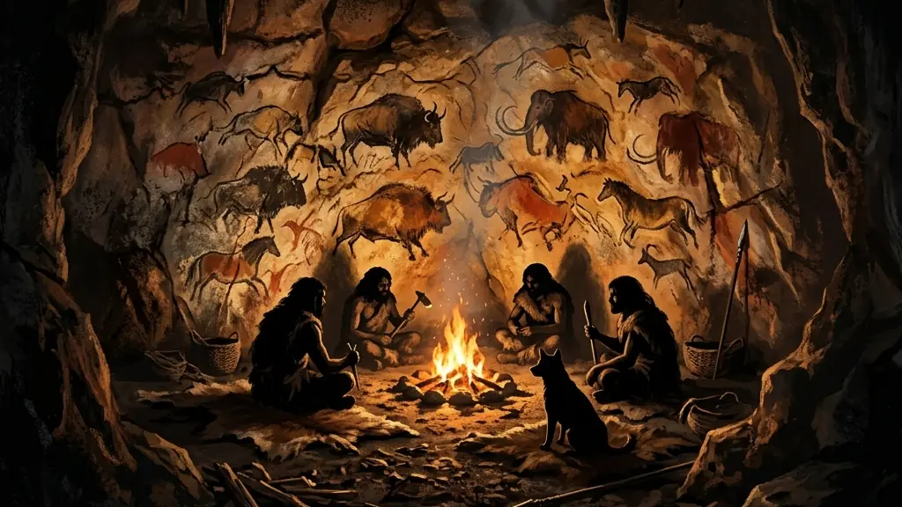
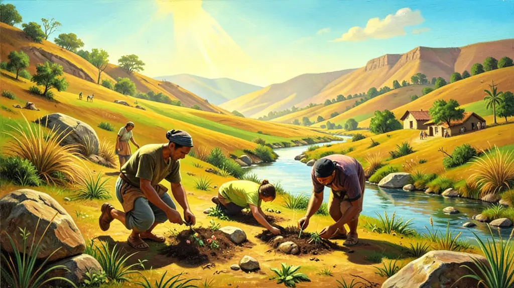
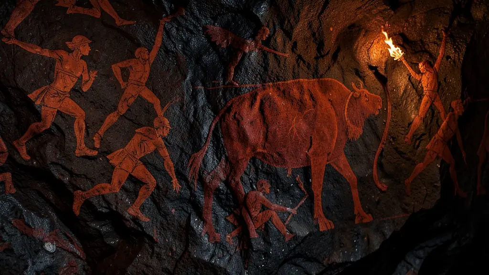

Capítulo 01
1. O Paleolítico e a Idade do Fogo
Pense no ser humano como um andarilho eterno. Sem agricultura, ele dependia do que a natureza oferecia. A invenção do fogo foi o nosso primeiro 'grande golpe' contra o destino natural. Com o calor, o cérebro humano pôde se desenvolver mais (carne cozida é melhor digerida), e as cavernas tornaram-se os primeiros 'clubes' sociais onde histórias e crenças eram compartilhadas através da arte rupestre.

Capítulo 02
2. A Revolução Neolítica: O Fim do Nomadismo
Por volta de 10.000 a.C., o clima da Terra mudou, permitindo a agricultura. Isso mudou TUDO. Ter comida estocada significava que nem todo mundo precisava caçar o dia inteiro. Pessoas podiam ser artesãos, sacerdotes ou inventores. O sedentarismo criou a ideia de propriedade, de território e de família nuclear. Foi o nascimento da sociedade complexa que vivemos hoje.

Capítulo 03
3. Idade dos Metais e as Cidades-Estado
Ferro e bronze significavam arados melhores para a terra e espadas melhores para a guerra. As aldeias neolíticas cresceram e tornaram-se cidades muradas para proteger o estoque de grãos contra invasores. Surgiu a necessidade de um líder (Rei) para organizar a defesa e de impostos para sustentar os exércitos. Estava pronto o palco para o nascimento do Estado moderno.

Capítulo 04
4. Arte Rupestre e Significado Simbólico
Desenhar nas paredes não era 'arte por arte'. Era uma forma de registrar vitórias, de educar as crianças ou de realizar rituais para garantir que a próxima caçada fosse boa. Essas pinturas são as nossas primeiras bibliotecas, janelas para entender como os nossos antepassados viam o mundo, a morte e as forças da natureza.
Capítulo 05
5. Pré-História no Brasil e as Lagoas Santas
No Brasil, tivemos grandes civilizações pré-históricas. Desde os caçadores-coletores de Lagoa Santa (onde foi achada **Luzia**, a mulher mais antiga das Américas) até os povos dos **Sambaquis** (montanhas de conchas no litoral sul) e a cerâmica marajoara no Pará. Estudar a pré-história brasileira é essencial para quebrar o mito de que o Brasil só 'começou' em 1500.
A Revolução Neolítica, marcada pela transição do nomadismo para o sedentarismo, representou talvez a mudança mais radical na trajetória humana. Ao domesticar plantas e animais, o homem deixou de ser apenas um predador da natureza para tornar-se um produtor. Esse processo não ocorreu de forma simultânea em todo o globo, mas em 'focos' independentes, como no Crescente Fértil, na China e na Mesoamérica, alterando permanentemente a relação entre a humanidade e o meio ambiente.
A sedentarização permitiu o surgimento dos primeiros excedentes agrícolas, o que foi o catalisador para a especialização do trabalho e a estratificação social. Com a comida garantida, nem todos precisavam dedicar-se à coleta ou caça, permitindo o surgimento de artesãos, guerreiros e sacerdotes. Essa nova organização social exigiu formas mais complexas de controle e administração, levando ao nascimento das primeiras aldeias e, posteriormente, das cidades-estado que marcariam a Antiguidade.
O domínio do fogo e a invenção da escrita são frequentemente citados como os marcos de início e fim da Pré-História, mas essa cronologia é hoje vista com cautela. A arte rupestre, por exemplo, já demonstrava uma complexa capacidade simbólica e espiritual muito antes de qualquer sistema de escrita. Para o Enem, é vital entender a Pré-História não como uma fase de 'atraso', mas como um período de inovações tecnológicas e culturais que estabeleceram as bases de todas as civilizações posteriores.
Fonte: CHILDE, Gordon. A Evolução Cultural do Homem. Rio de Janeiro: Zahar, 1981.
Atividades interativas
Questões para fixar
A descoberta da Agricultura, ocorrida no período Neolítico, trouxe mudanças profundas na organização social humana. Qual foi o principal efeito geográfico dessa descoberta?
A arte rupestre, encontrada em cavernas ao redor do mundo, é vista pelos historiadores contemporâneos como:
Qual foi a principal consequência do controle do fogo pelo ser humano durante o Paleolítico?
O que caracterizou a Revolução Agrícola durante o Neolítico?
Qual foi o resultado da Revolução Urbana na Idade dos Metais?